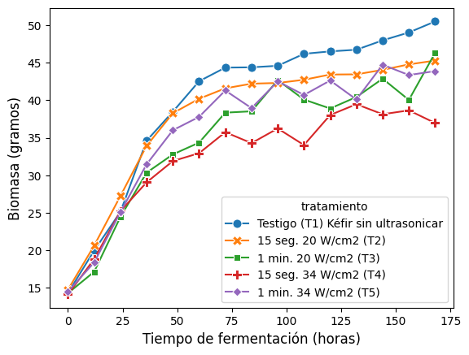

Fuente de datos#
El conjunto de datos proviene del trabajo de investigación Efecto del ultrasonido de intensidad alta y la fermentación sobre metabolitos específicos y propiedades funcionales del kéfir de agua [Y and Figueroa, 2025], en el cual se detalla el proceso experimental realizado con gránulos de kéfir de agua:
A una cantidad inicial de gránulos se le aplica un tratamiento de ultrasonido de intensidad y periodo de exposición definidos. Posteriormente, los gránulos se mantienen bajo condiciones controladas de temperatura y presión durante un periodo de 15 horas. Este proceso se repite hasta completarse en total un lapso de 175 horas en cuales se obtienen 15 puntos de medición.
El dataset está compuesto por cinco series de tiempo, cada una conformada por 15 puntos equiespaciados. Cada serie representa el crecimiento de los gránulos asociado a un pretratamiento específico. En la siguiente figura se muestra una visualización de estas series, junto con una interpolación lineal entre los puntos medidos.
Tratamiento |
Rango de tiempo (horas) |
Intensidad (W/cm²) |
Periodo de exposición (segundos) |
Número de observaciones |
|---|---|---|---|---|
Testigo (T1) Kéfir sin ultrasonicar |
0–168 |
0 |
0 |
15 |
15 seg. 20 W/cm² (T2) |
0–168 |
20 |
15 |
15 |
1 min. 20 W/cm² (T3) |
0–168 |
20 |
60 |
15 |
15 seg. 34 W/cm² (T4) |
0–168 |
34 |
15 |
15 |
1 min. 34 W/cm² (T5) |
0–168 |
34 |
60 |
15 |
Los efectos que tiene el ultrasonido en el crecimiento de gránulos de kéfir es notorio al visualizar la serie de tiempo testigo ( sin tratamiento ) junto con las series con tratamiento . La serie de tiempo basal se nota que sigue el comportamiento esperado descrito en la literatura acerca de ello, es decir, sigue un modelo logístico simple. A cambio, las series con mayor intensidad de ultrasonido parecen oscilar en vez de estabilizarse dentro del periodo de saturación . Esto implica una dinámica desconocida introducida por el tratamiento.
Tratamiento |
Biomasa mínima (g) |
Biomasa inicial (g) |
Biomasa final (g) |
Biomasa máxima (g) |
Biomasa promedio (g) |
Desviación estándar (g) |
|---|---|---|---|---|---|---|
Testigo (T1) Kéfir sin ultrasonicar |
14.32614 |
14.32614 |
50.48937 |
50.70620 |
39.68351 |
11.22519 |
15 seg. 20 W/cm² (T2) |
14.76670 |
14.76670 |
45.27640 |
45.29563 |
37.65503 |
9.42911 |
1 min. 20 W/cm² (T3) |
14.30110 |
14.30110 |
46.30397 |
46.30397 |
34.77106 |
9.48952 |
15 seg. 34 W/cm² (T4) |
14.13803 |
14.13803 |
36.96790 |
39.47073 |
32.24491 |
7.50897 |
1 min. 34 W/cm² (T5) |
14.51163 |
14.51163 |
43.88087 |
44.88180 |
36.09303 |
9.52978 |
{kind=link}

Para lograr encontrar esta dinámica oculta, primero tenemos que partir de la ya conocida. Por ello, describiremos brevemente la formulación básica detrás de los modelos poblacionales que se utilizan para describir el crecimiento microbiano.
Tratamiento de Datos#
El procesamiento de los datos experimentales se realizó mediante un flujo automatizado de tipo ETL (Extract, Transform, Load), implementado en Python utilizando la librería pandas, con el objetivo de convertir la matriz de datos original en un formato analítico limpio y estructurado.
Extracción#
Los datos crudos fueron obtenidos a partir un archivo excel, correspondiente al registro de concentración de biomasa durante el proceso de fermentación de kéfir de agua bajo los distintos tratamientos de ultrasonido. Dado que el archivo original contenía encabezados y metadatos no relevantes para el análisis, se omitieron dichas filas, conservando únicamente la tabla de datos experimentales.
Transformación#
Una vez extraídos, los datos —originalmente en formato ancho, con una columna por cada tratamiento— fueron reestructurados a formato largo (long format) mediante la función melt(), generando las variables ‘tratamiento’ y ‘concentración (g/cm³)’. Previamente se eliminaron columnas sin contenido informativo (Unnamed), producto del formato original del archivo. Con el fin de vincular cada tratamiento con sus condiciones experimentales, se definió un diccionario de correspondencia que mapea la descripción textual de cada tratamiento (por ejemplo, “15 seg. 20 W/cm² (T2)”) a un identificador estandarizado (tratamiento_1 a tratamiento_5). A partir de este identificador, un segundo diccionario permitió incorporar dos variables experimentales clave:
intensidad(W/cm²)
periodo de exposición(s)
De esta manera, cada observación quedó asociada no solo al tratamiento nominal, sino también a sus parámetros físicos de aplicación, lo que facilita el análisis del efecto de la intensidad y el tiempo de exposición sobre la concentración de biomasa a lo largo del tiempo de fermentación.
Carga#
Finalmente, el conjunto de datos transformado fue exportado en formato .csv, un archivo consolidado (control_dataset.csv) que reúne la totalidad de las observaciones, permitiendo tanto el análisis individual por tratamiento como el análisis comparativo global.